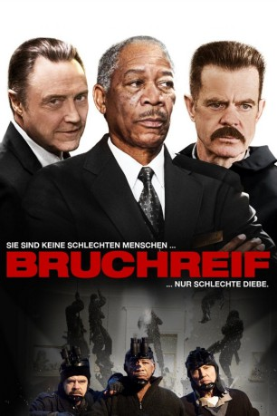

#2886 Bruchreif
Alternativ: The Maiden Heist
 
 IMDB-Wertung: 6.1 / 10
IMDB-Wertung: 6.1 / 10  Metascore: 0
Metascore: 0 
Drei brave Museumswärter, ein Schicksalsschlag – Trennung! Der neue Chef des Museums hat ihre über alles geliebten Kunstwerke nach Dänemark verkauft, um Platz für wüste Avantgarde-Kunst zu schaffen. Ihr halbes Leben haben Charles, Roger und George vor und mit ihren Lieblingswerken verbracht, ihr Verlust wäre wie eine Amputation. Doch bevor es so weit kommt, tüfteln die Brüder im Geiste einen genialen Coup aus. Sie werden ihre drei Favoriten vor den Dänen retten und einfach stehlen. Ein raffinierter Masterplan wird minutiös ausgearbeitet. Nichts bleibt dem Zufall überlassen – wenn die frisch gebackenen Meisterdiebe da nicht eine winzige Kleinigkeit übersehen hätten.
Jahr: 2009
Dauer: 91 Minuten
FSK: 12
Land: USA Studio: Sony Pictures Home EntertainmentTonspuren:
Untertitel: Deutsch,
Auflösung: 1080p (1920x800) Größe: 9768 MB
Genre: Komödie, Krimi
Regisseur: Peter Hewitt
Drehbuch: Michael LeSieur
Soundtrack: Rupert Gregson-Williams
Darsteller:
 Christopher Walken als Roger Barlow
Christopher Walken als Roger Barlow Joseph McKenna als Lead Villain
Joseph McKenna als Lead Villain- Wynn Everett als Docent
 Marcia Gay Harden als Rose Barlow
Marcia Gay Harden als Rose Barlow- Bhavesh Patel als Donnie
 Todd Weeks als Curator
Todd Weeks als Curator Morgan Freeman als Charles Peterson
Morgan Freeman als Charles Peterson William H. Macy als George McLendon
William H. Macy als George McLendon Breckin Meyer als Starving Artist
Breckin Meyer als Starving Artist- Stephen Stapinski als Bob
 Bates Wilder als Warehouse Foreman
Bates Wilder als Warehouse Foreman Christy Scott Cashman als Assistant Museum Director
Christy Scott Cashman als Assistant Museum Director Eric Bruno Borgman als Rick , uncredited
Eric Bruno Borgman als Rick , uncredited- Burke Bryant als Brian , uncredited
- Lauren E. Clarke als Museum Guard Jordan Smalt , uncredited
- Vic Clay als Janitor , uncredited
- Michael Anthony Coppola als Security Guard , uncredited
- Elisangela DiAlencar als Museum Goer , uncredited
 Keith Fluker als Art Dealer , uncredited
Keith Fluker als Art Dealer , uncredited Jim Ford als Museum Patron , uncredited
Jim Ford als Museum Patron , uncredited Albert Gornie als Warehouse Employee , uncredited
Albert Gornie als Warehouse Employee , uncredited- Lawrence Hollie als Pedestrian , uncredited
- Jon Korzeniowski als Dock Worker , uncredited
 Dan Marshall als Museum Visitor / Arts Fair Artist with Booth , uncredited
Dan Marshall als Museum Visitor / Arts Fair Artist with Booth , uncredited- Tarek Moussa als Pedestrian , uncredited
- Michael J. Peluso als Diner Patron , uncredited
- Osmani Rodriguez als Carlos , uncredited
 Rich Skinner als Dog Owner , uncredited
Rich Skinner als Dog Owner , uncredited- Kal Thompson als Tourist , uncredited
- Ashley Wolfe als Model , uncredited
- Patricia B. Till als Rude Museum Patron
- Philip Dorn Hebert als Needlebaum
- Jim Chiros als Sculptor
- Anthony Cascio als Tony
- Naheem R. Garcia als Shipping Supervisor
 David J. Curtis als Humming Security Guard
David J. Curtis als Humming Security Guard- Bart A. Piscitello Jr. als Pauly
- James Welu als Museum Executive
- Peter Darrigo als Phil
- Douglass Bowen Flynn als Danish Guard
- Dale F. Appel als Screaming Woman , uncredited
- Ellen Becker-Gray als Woman in Boston Public Gardens , uncredited
- Beau C. Bedugnis als Adam Roffman , uncredited
- Joshua Brown als Museum Guest , uncredited
- Gail Bruno als City Dweller / SUV Driver , uncredited
- Desiree April Connolly als Museum Goer / City Dweller , uncredited
- Victoria Cyr als Woman Walking Poodle , uncredited
- Roger Dillingham Jr. als (uncredited
- Vincent J. Earnshaw als Museum Patron / Public Garden Pedistrian , uncredited
- Scott C England als Museum Executive , uncredited
Datei: X:\2009(A-F)\Bruchreif (2009, FSK12, 1920x800).mkv seit 29.12.2015
Festplatte: HD 2008(G-Z)-2009(A-F)
 Es gibt insgesamt 91 Filme in der Gruppe '2009(A-F)'
Es gibt insgesamt 91 Filme in der Gruppe '2009(A-F)'